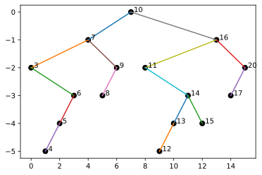
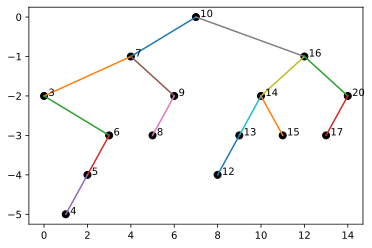
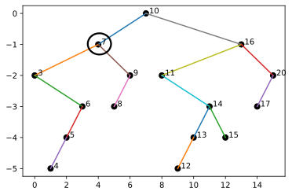
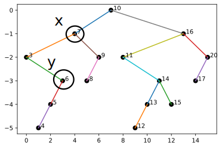
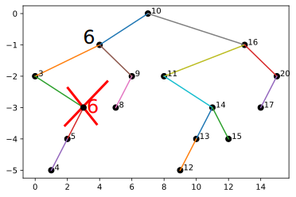
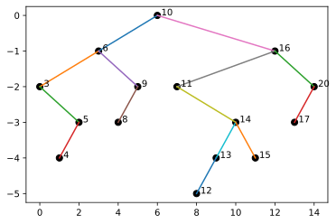

Lab 6: Tree Key Removal
Chris Tralie
Overview / Logistics
The purpose of this lab is to get practice with recursion in the service of tree algorithms. In particular, students will explore two different algorithms for removing keys in trees: one simple algorithm which is O(N) in the worst case, and another algorithm that is O(logN) if the tree is balanced.
Click here to download the starter notebook for this lab. If you are using Google colab, the notebook is hosted at https://github.com/ursinus-cs371-s2022/Lab6_TreeRemoval. Either way, you will need to use jupyter to create the tree plots to check your work.
When you are finished, upload your Trees.ipynb notebook to canvas.
Part 1: A Slow Remove
One naive algorithm to remove nodes from a tree is to take out a node and add all of its children to the tree again from scratch. For example, let's suppose we started with the following tree, which is what's constructed in the lab by default:

And let's suppose we wanted to remove 11 from the subtree. Then we would set 16's left child to be None, and then we would add keys 12, 13, 14, and 15 back to the tree. Below is an animation of doing this and adding them back in the shuffled order 14, 13, 12, 15, to keep the tree balanced (you can use np.random.shuffle to accomplish this)

Your task: Add a method remove_naive to the BinaryTree class to kick off the recursion, as well as a corresponding recursive helper method remove_naive to the TreeNode class, that implement this technique together. The methods should do the following:
- Find the node to remove, if it exists in the tree
- Set a reference to that node in its parent to be
None - Recursively fill in a list with all of the nodes in that node's left and right subtrees (there can be O(N) of these if the node is high enough up in the tree, which is what makes this slow)
- Shuffle the nodes in that subtree, and add their keys one by one back to the tree
Hint: One of the things that makes removal tricky is we remove a node by setting its parent to no longer refer to it. But we don't have references to parents in the data structure we've setup; only references to left and right children. Rather than adding parent references and complicating our data structure, we can use recursion to reassign child references. The pattern is to have the recursive remove method return a node reference, and then use the pattern
self.root = self.root.remove(key, ...)
self.left = self.left.remove(key, ...)
self.right = self.right.remove(key, ...)
In the remove_naive algorithm, if we end up at the node we want to remove, we return None. Otherwise, we return that node.
Part 1: A Faster Remove
There is a cleverer way to remove a node that will take O(logN) time if the tree is balanced, rather than O(N) time. We have three cases to consider
-
The key we want to remove is in a leaf node. In this case, all we have to do is reassign its parent's reference to it to be
None -
The key we want to remove has only one child. In this case, we set the key's parent to refer to that child. For example, if we remove node 11 in the tree below, then 16's left child changes from 11 to 14
 -
The trickiest case to consider is the case where we have to remove a node
xthat has two children. What we can do is the following:- Find the node in the left subtree with the greatest key. Call this node
y -
Set
x's key to bey's key. This guarantees that every child inx's subtree still respects the binary tree order, except fory -
Because
yis the greatest node, we can guarantee thatyhas either only one child or none, so we can remove it via the first two cases.
For example, if we remove node with the key 7 in the tree we start with, we identify 6 greatest value in the left subtree that we can swap in, and then we remove that 6
    - Find the node in the left subtree with the greatest key. Call this node